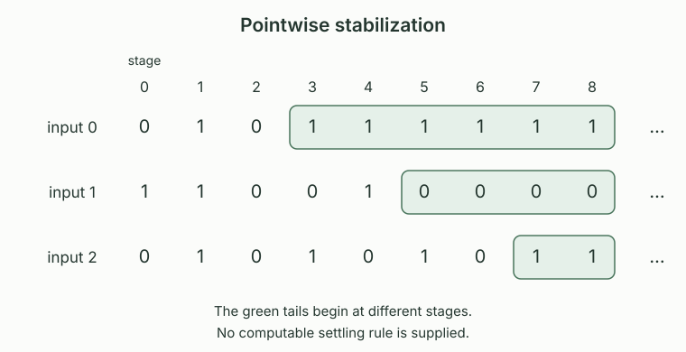

A computable binary approximation is a total computable function \(a:\mathbb N^2\to\{0,1\}\), written \(a(s,x)\). It converges pointwise to a set \(A\subseteq\mathbb N\) if
A set admitting such an approximation is limit computable. The stage \(s_0\) can depend on \(x\), and need not be computable from \(x\). Both changes \(0\to1\) and \(1\to0\) are allowed. For each fixed input, convergence means that only finitely many changes occur; the final answer still has to be the specified membership bit.
Prescribed finite allowances on the number of revisions give the finite change classes. These impose one bound for every input, strengthening pointwise convergence.
Even among approximations starting at zero, there need not be a computable bound on the number of revisions, even after replacing the approximation: the computable-bound separation gives such a limit-computable set.
A set \(A\) is limit computable if and only if there is a computable binary test \(b(s,x)\) converging to \(\chi_A(x)\) such that \(b(s,x)=1\) implies \(x<s\). Thus the snapshots \(A_s=\{x:b(s,x)=1\}\) can be required finite with a computable bound.
Given \(a\), set \(b(s,x)=a(s,x)\) for \(x<s\), and set it to zero otherwise. The test is computable and \(A_s\subseteq\{0,\ldots,s-1\}\). For fixed \(x\), once \(s\) exceeds both \(x\) and a convergence stage for \(a(s,x)\), the truncated answer is the correct answer. Conversely the supplied test \(b\) is itself a computable binary approximation. A merely computable membership test for each separately chosen finite set would not supply the required joint algorithm in \((s,x)\).
If \(a(s,x)\to\chi_A(x)\), then for every \(n\) there is a stage \(s_0\) such that
For each of the finitely many \(x<n\), choose a pointwise convergence stage. Their maximum works for all these inputs; for \(n=0\), take zero. This is an existence argument. It does not compute a suitable maximum from \(n\), because the individual convergence stages were not given by a computable function.
Every c.e. set and every co-c.e. set is limit computable. In particular, let \(K=\{e:\varphi_e(e)\downarrow\}\) be the ordinary diagonal halting set. Both \(K\) and its complement are limit computable, although neither is decidable and the complement is not c.e.
For a c.e. set \(W_e\), use the jointly computable finite stages from . Their membership bits increase and converge to \(\chi_{W_e}\): a member eventually enters and remains, while a nonmember never enters. For the complement use \(a(s,x)=1-\chi_{W_{e,s}}(x)\). This computable binary test converges to \(\chi_{\overline{W_e}}\); if finite snapshots are wanted, truncate it as in . Apply these observations to the c.e. undecidable halting set and its non-c.e. complement. Limit computability therefore permits sets beyond positive recognition.
The two-change characterization identifies exactly the limits obtained by removing one enumerable set from another, with guesses starting at zero. A bound on the number of changes is distinct from a bound on their stages.
Suppose a computable approximation has given the same answer on an input for a million stages. Does pointwise convergence imply that its answer can no longer change? Is there necessarily one stage after which every input has its final answer?
No to both. An approximation may be zero on one input until any specified later stage and then be permanently one. For the second question, \(a(s,x)=1\) exactly when \(x<s\) converges to the whole of \(\mathbb N\), yet every stage still gives the wrong answer at \(x=s\). Convergence concerns each fixed input separately, with the order \(\forall x\exists s_0\forall s\ge s_0\).

For a fixed computable binary approximation \(a\), define its future-change relation by
Pairs \((x,s)\) are represented by the fixed computable pairing code. The relation asks about disagreement with the current answer, rather than about any earlier change.
For every supplied computable \(a\), there is a total computable map \(f_a(x,s)\), with no oracle, such that
On input \((x,s)\), run the successive tests \(r=s+1,s+2,\ldots\), computing both bits each time, and halt at the first disagreement. Each individual test terminates. This ordinary partial computation has domain exactly the coded future-change relation. Fix its program index \(d\). Freezing the coded input into that program gives an index which ignores its own input and runs \(\varphi_d(\langle x,s\rangle)\). The ordinary input-freezing map is primitive recursive once \(d\) is fixed, and the frozen index belongs to \(K\) exactly when that computation halts. Take this index as \(f_a(x,s)\). The construction is made once from the supplied algorithm for \(a\), independently of the set to which it might converge.
If \(a(s,x)\to\chi_A(x)\), the following \(K\)-oracle algorithm is total and decides \(A\):
Given \(x\), test \(s=0,1,2,\ldots\). Ask whether \(f_a(x,s)\in K\). At the first negative answer, return \(a(s,x)\).
A negative answer says exactly that \(a(r,x)=a(s,x)\) for every \(r>s\). Some negative answer exists: any stage at or beyond a convergence stage has no later disagreement. Thus the successive oracle tests find a stage and terminate. The returned value equals the limiting value, since the constant tail and the correct tail have an overlapping stage. The ordinary map \(f_a\), oracle query, least-stage search and final ordinary evaluation of \(a\) are operations of the oracle computation model. Hence this is an actual oracle program, and \(A\le_T K\).
Fix an ordinary recognizer index \(d\) with \(W_d=K\), and write \(K_s=W_{d,s}\). These are the finite halting approximations. Their binary tests are primitive recursive jointly in \((s,q)\), they increase, and \(K=\bigcup_s K_s\). In particular, for each fixed bound \(u\), some stage has the correct answers to every halting question below \(u\), and every later stage retains them.
The last assertion follows from applied to this increasing approximation. Negative answers in \(K_s\) may be wrong at an early stage; they are guesses made by an ordinary terminating test.
Suppose an oracle program of index \(e\) computes \(\chi_A\) with oracle \(K\). Let \(B^S(k,e,x)\) be the bounded oracle evaluator: zero means no successful result within allowance \(k\), and \(y+1\) encodes a successful output \(y\). Define the bounded guess
This is a total computable binary function, with finite positive snapshots. To compute it, run the finite-table evaluator with allowance \(s\); every oracle query in that finite calculation is answered by the ordinary test for membership in \(K_s\). The table’s recursion is bounded and its entries use only primitive-recursive operations and this uniformly primitive-recursive stage test. Consequently the whole calculation is primitive recursive jointly in \((s,e,x)\). Failure to see an output is assigned the provisional answer zero, even if the actual oracle program would eventually output one.
Suppose \(B^K(k,e,x)=y+1\). There is a stage \(s_0\) such that for every \(s\ge s_0\),
The bounded evaluator with allowance \(k\) only asks questions below \(k\), as established in its query-agreement argument. Choose a stage \(t\) after which \(K_s\) agrees with \(K\) below \(k\). Substitution of those equal answers leaves every entry of the bounded calculation unchanged, so its result is still \(y+1\). For \(s\ge\max(t,k)\), increasing the allowance from \(k\) to \(s\), with the same oracle \(K_s\) fixed, preserves this successful result by monotonicity of bounded evaluation. This uses a fixed successful allowance before increasing the stage; agreement on an ever-growing prefix was not assumed.
If \(\varphi_e^K(x)=\chi_A(x)\) for every \(x\), then \(a_e(s,x)\to\chi_A(x)\) pointwise. Thus \(A\le_T K\) implies that \(A\) is limit computable.
Fix \(x\). The true oracle computation halts with output \(y=\chi_A(x)\). Completeness of bounded evaluation supplies an allowance \(k\) with \(B^K(k,e,x)=y+1\). By , all sufficiently late finite-oracle calculations with allowance \(s\) have this same output. Increase the threshold further so that \(x<s\). If \(y=1\), their coded result is two and the guess is one. If \(y=0\), it is one and the guess is zero. This proves convergence for the fixed input and therefore for every input. The early computations may follow incorrect oracle branches; only their eventual agreement with this fixed true computation is used.
For every \(A\subseteq\mathbb N\),
The two algorithms in and prove the first equivalence. The ordinary halting set \(K\) and \(J(\varnothing)\) are many-one equivalent, hence Turing equivalent. Post’s decision characterization identifies \(\Delta_2\) with the sets computable in \(J(\varnothing)\). Transitivity gives the second equivalence. This is the Shoenfield limit lemma for sets; all approximating algorithms are ordinary algorithms.
For an approximation \(a\) converging to \(A\), a convergence modulus is a function \(m:\mathbb N\to\mathbb N\) satisfying
Classically such a function exists by selecting a convergence stage for each input. If a computable modulus is supplied, then \(A\) is decidable: compute \(a(m(x),x)\), which is its characteristic bit. In particular, no computable approximation to the undecidable set \(K\) can have a computable convergence modulus. The limit lemma promises an eventually correct answer without an effective certificate that the final change has occurred.
In a tagged marker construction, the final output set itself serves as an oracle certifying a permanent finite marker prefix. The resulting halting decoder uses those final-set queries; the construction does not supply an ordinary computable settling bound.
A computable bound on the number of revisions does not provide such a settling stage, even when the bound is one.
A different oracle-computable function records the first stage with a correct finite prefix, allowing later mistakes. A computable bound on these first agreement times already decides the limit set. This gives hyperimmune degree to every noncomputable limit-computable set.
For increasing c.e. approximations, decidability gives a computable settling modulus. Does every computable binary approximation to the empty set have a computable convergence modulus?
No. Use the fixed increasing finite halting approximations \(K_s\), with \(K_0=\varnothing\), and set \(p(s,x)=1\) exactly when \(x\in K_{s+1}\setminus K_s\). Each row has at most one pulse, so \(p(s,x)\to0\) for every \(x\). Suppose a computable \(m\) were a convergence modulus for this approximation. No entry into \(K\) could happen at a transition indexed by \(s\ge m(x)\). Therefore \(x\in K\) if and only if \(x\in K_{m(x)}\): a later entry would produce a forbidden pulse, while an earlier entry persists. Testing that finite stage would decide \(K\), a contradiction. The increasing approximation theorem concerns its particular monotone hypotheses; arbitrary changes of mind do not satisfy them.